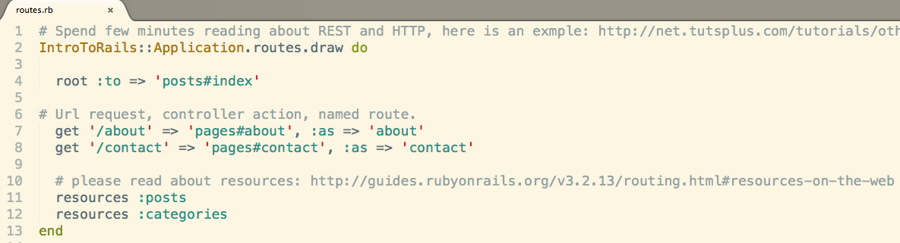

Just a pile of gems...
I have entered the final stretch of DevBootCamp this past week. Having been exposed to Ruby and Sinatra, I felt comfortable understanding the architecture of Rails. The following is a walkthrough of my workflow in creating a new Rails application.
- bundle install
- Setup databases: touch config/database.yml and rake db:create
- 3 types of databases:
- development(local deploy)
- test(for rspec and various test suites)
- production(what is sent to the world. Should not include test suite)
- Make migrations Should be plural! rails g migration name_of_file
- Make corresponding models. Should be singular!
- Make routes in routes.rb 
- Make controller#action and corresponding view plural controller file and view folder.
- categories#index and view
- categories#show and view
- categories#edit comes from categories#show and view => categories#update

- categories#destroy Comes from categories#show